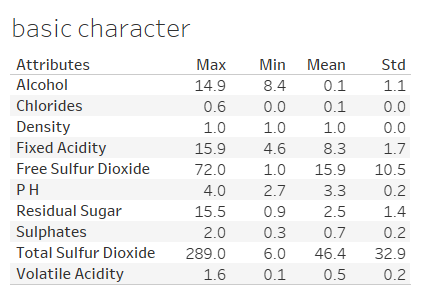
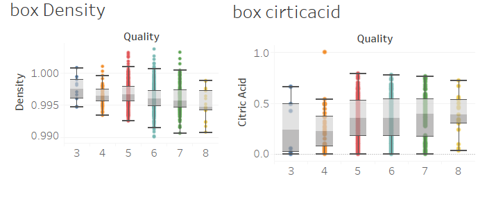
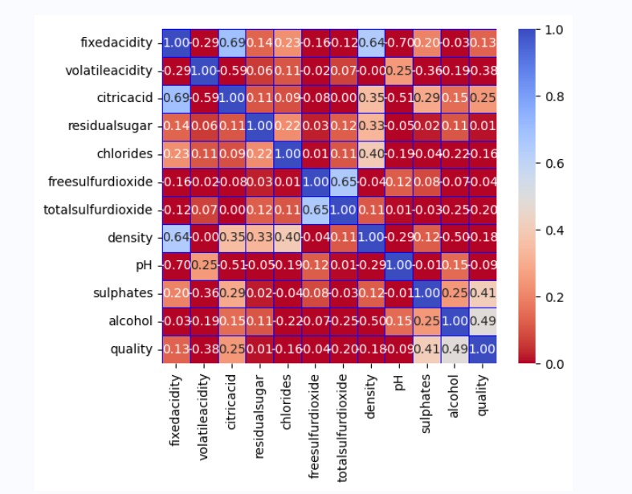
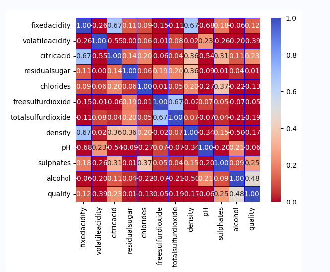
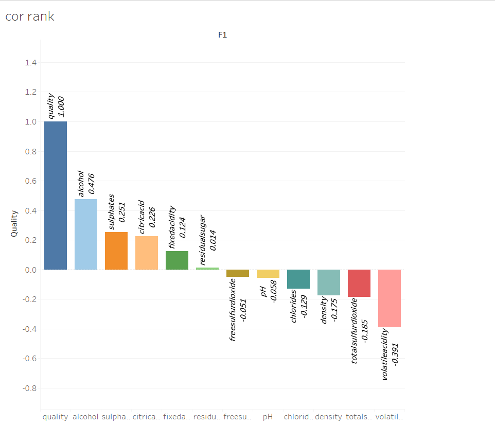

Final Project
Team Info
| English Name | Chinese Name | ID |
|---|---|---|
| Jing Shuji | 荆树吉 | 202000130199 |
| Zeng Junhao | 曾俊豪 | 202000130222 |
Dataset1: Bank Marketing（classification)
Assignment1
Background
Based on the classic marketing dataset of banks, the user characteristics and the current status of bank deposit business are analyzed to formulate bank marketing strategies. Major domestic banks and Internet wealth management institutions can learn from the marketing of bank deposit products.These data are related to the marketing activities of Portuguese banking institutions. These marketing campaigns are based on phone calls, and the bank’s customer service staff is required to contact the customer at least once to confirm whether the customer will subscribe to the bank’s products (fixed deposits)
Data description
The data is related with direct marketing campaigns of a Portuguese banking institution. The marketing campaigns were based on phone calls. Often, more than one contact to the same client was required, in order to access if the product (bank term deposit) would be (‘yes’) or not (‘no’) subscribed.
There are four datasets:
bank-additional-full.csv with all examples (41188) and 20 inputs, ordered by date (from May 2008 to November 2010), very close to the data analyzed in [Moro et al., 2014]
bank-additional.csv with 10% of the examples (4119), randomly selected from 1), and 20 inputs.
bank-full.csv with all examples and 17 inputs, ordered by date (older version of this dataset with less inputs).
bank.csv with 10% of the examples and 17 inputs, randomly selected from 3 (older version of this dataset with less inputs). The smallest datasets are provided to test more computationally demanding machine learning algorithms (e.g., SVM).
The classification goal is to predict if the client will subscribe (yes/no) a term deposit (variable y).
We only use bank full. csv to segment into training and testing sets
Among all the Y attributes, the majority of customers did not complete their fixed deposit subscription in the end, and over 88% of customers did not choose to subscribe. The remaining 11% of customers chose not to subscribe to fixed deposits, as shown in the following figure.

Data preprocessing
Remove missing values
Through the corresponding introduction of the website where the data is located, it can be known that there are no missing values in the corresponding data. After verifying the integrity of the data through code, it is also known that there are no missing values in the attributes of the data.
1 | print(bank_data.isnull().sum()) |

Remove outliers
For all non character attributes of continuity in data, through the analysis of the boxplot, we can see that there are many outliers in the four attributes of Campaign, Balance, Duration, and Pdays. Therefore, it is necessary to remove outliers, and the corresponding outliers are shown in the following figure.

Therefore, Python code is used to process the corresponding data with outliers, using 3 σ Method to filter outliers.
1 | def remove_outliers(df, column): |
After processing, the box diagrams for Y and Campaign, Balance, Duration, and Pdays are shown below

It can be seen that this method has great effectiveness.
Data normalization
Since all data contains different ranges and not all data can be digitized, we need to normalize the data. Therefore, we need to perform a normalization operation: normalize=lambda x: (x-x.mean())/(x.max() - x.min()) . Namely, mean normalization. Corresponding to the formula shown in the following figure:

Analyze the data
Due to the need for classification methods, all data should be considered, not just numerical data. So we will analyze the relationship between education and loan.Explore the corresponding debt situation at each learning stage, as debt situation has a significant impact on whether to apply for fixed deposits.The relationship between the two is shown in the following figure.

Among them, the number of people with a secondary education background is the highest, and they are easily in debt. Nearly 20% of them still have outstanding loans, while the number of people who choose not to fill in their education background is the lowest, and less than 8% of them have outstanding loans.
When it comes to corresponding liabilities, the relationship between age savings and education cannot be avoided.

It can be seen that people with a primary school diploma usually have less savings, as the corresponding dataset for primary school is located closer to the X-axis.
summary
Firstly, we analyzed the distribution range of corresponding Y. Afterwards, we analyzed the relationship between the attributes of the numerical part and Y, identified outliers through the corresponding boxplot of the distribution, and utilized 3 σ The method solves the problem of outliers and verifies it. Afterwards, we discovered some simple relationships between education, age, and wage debt.
Assignment 2
Attribute selection
We need to choose several excellent selection methods to select several excellent attributes. If we adopt the importance ranking mechanism for corresponding attributes, we will choose the top five. The following are six corresponding situations. They are respectively
BestFirst+CfsSubsetEval(forward,backward,bi-directional)
Ranker+InfoGainAttributeEval
Ranker+GainRatioAttributeEval
GreedyStepwise+WrapperSubsetEval
And evaluate with J48 with the same parameters


The corresponding six methods have 4 different attribute choices, and the accuracy of J48 corresponding to the same parameter is shown in the table below：
| method | accuracy |
|---|---|
| BestFirst+CfsSubsetEval(forward,backward,bi-directional) | 90.8482% |
| Ranker+InfoGainAttributeEval | 91.0979% |
| Ranker+GainRatioAttributeEval | 90.7447 % |
| GreedyStepwise+WrapperSubsetEval | 91.588 % |
So our selection method is the last oneGreedyStepwise+WrapperSubsetEval
The final attribute selection is shown in the following table
| Attributes | If we choose |
|---|---|
| age | False |
| job | True |
| marital | True |
| education | False |
| default | False |
| balance | False |
| housing | False |
| loan | False |
| contact | True |
| day | True |
| month | True |
| duration | True |
| campaign | False |
| pdays | False |
| previous | False |
| poutcome | True |
Learn scheme
This dataset is only used for classification, and WEKA contains many classification ：method models. We ultimately chose OneR, Naive Bayesian,J48, KNN, and stacking,We ultimately chose an 8:2 ratio between the training and testing sets。
OneR
OneR is the meaning of One Rule, which is a rule that only looks at one feature of a certain thing and then predicts its category (selecting a feature with a low error rate).
By testing the processed dataset, we achieved an accuracy of 90.492%.

Adjusting minBuchetSize does not change the corresponding accuracy, so the default corresponding result is the optimal OneR result. It can be seen that even the simplest OneR method can achieve significant accuracy.
Naive Bayesian
Naive Bayesian algorithm is one of the most widely used classification algorithms.
The Naive Bayesian method is a simplification of the Bayesian algorithm, which assumes that the attributes are conditionally independent of each other when the target value is given. That is to say, no attribute variable has a significant proportion to the decision result, and no attribute variable has a small proportion to the decision result. Although this simplification approach reduces the classification performance of Bayesian classification algorithms to a certain extent, it greatly simplifies the complexity of Bayesian methods in practical application scenarios.
Algorithm principle
Assumption of characteristic conditionsAssuming there is no connection between each feature, given a training dataset where each sampleall include n-dimensional features，即
，Class tag set contains K categories，assume

For a given new sample，To determine which category it belongs to, according to Bayesian theorem, one can obtain
belong
Probability
The category with the highest posterior probability is referred to as the predicted category, which is:
The naive Bayesian algorithm assumes the independence of the conditional probability distribution, which means that the features of each dimension are independent of each other. Based on this assumption, the conditional probability can be transformed into:
Substituting it into the Bayesian formula above, we obtain:
So, a naive Bayesian classifier can be represented as:
Because for all，The denominator values in the above equation are all the same, so the denominator part can be ignored. The Naive Bayesian classifier is ultimately represented as:
We have chosen useKernelfalseEstimator =true,This parameter setting is significantly better than useKernelEstimator =false，We achieved accuracy 90.8025% by establishing a naive Bayesian model，As shown in the following figure：

J48
In machine learning, J48 is a decision tree based classification algorithm and an important component of Weka machine learning tools. By using the J48 algorithm, we can construct a decision tree model based on a given training dataset and use it to classify and predict new unknown data.
The J48 method mainly has two key parameters: confidence factor and minNumObj. Finally, we set confidence=0.20 and minNumObj=2.
In the end, we achieved an accuracy of 91.6672%, as shown in the following figure：

It can be seen that the effect of J48 is more significant due to OneR and Naive Bayes.
The following is the decision tree generated by the J48 method

KNN
KNN is the English abbreviation for K-Nearest Neighbor, which translates to K nearest neighbors in Chinese. Some people simply refer to it as the “nearest neighbor algorithm.”. The letter “K” may seem fresh, but its function has actually been exposed to as early as middle school. When learning permutation and combination, textbooks like to use the letter “n” to refer to multiple numbers, such as “finding the sum of n numbers”. There is no secret to this, it is a conventional usage. The letter K in the KNN algorithm plays the same role as n. The value of K represents how many nearest neighbors were used.
The key to KNN lies in its nearest neighbor. Just looking at the name may not seem to have much to do with classification, but as we mentioned earlier, the core of KNN lies in majority voting, and who has the right to vote? This is the “nearest neighbor”, which refers to the K nearest points centered on the sample point to be classified. The category with the highest proportion among these K points belongs to the sample points to be classified.
In the end, we chose KNN=18 and achieved an accuracy rate of 90.6381%, effectively avoiding overfitting and underfitting problems.

stacking
For a problem, we can use different types of learners to solve the learning problem. These learners usually can learn a part of the problem, but cannot learn the entire space of the problem. The approach of Stacking is to first construct multiple different types of primary learners and use them to obtain primary prediction results. Then, based on these primary prediction results, a secondary learner is constructed to obtain the final prediction result. The motivation for stacking can be described as: if a primary learner incorrectly learns a certain region of the feature space, then a secondary learner can correct this error appropriately by combining the learning behavior of other primary learners.
Through stacking, we combined all previous learning methods and used logistic regression as the matacassifier, ultimately achieving good accuracy, as shown in the following figure.

Stacking integrates all previous methods, but ultimately J48 has the highest accuracy.
Scheme comparison
Among the above classification methods, due to the normativity of the dataset, each method has a considerable accuracy. The following is the accuracy table corresponding to all methods.

Among all the corresponding methods mentioned above, J48 is the best classification method, so we chose to use J48 for validation on the test set, and the final accuracy was 91.6098%, which was very effective.

summary
In this experiment, we chose GreedyStepwise+WrapperSubsetEval to select attributes. In addition to the dependent variable, we selected seven attributes. Then, we used five classification methods, OneR, Naive Bayes, J48, KNN, and stacking, to perform the classification task. Among all methods, J48 performed the best and achieved the best results.
Dataset 2:Wine Quality(regression)
Assignment 1
Background
Wine has played a very important role in human history, as it can relieve fatigue, alleviate illness, disinfect and kill bacteria, enhance beauty, and so on. Until the late 19th century, wine was an indispensable item in Western medicine, and moderate consumption can be beneficial to the human body. Whether used for social conversations or for nourishing the body and skin, excellent wines often have high prices due to their unique flavor and excellent quality. Therefore, the quality evaluation of wine has become an important process in the wine making industry.
Usually, we judge the quality of wine based on its physicochemical properties and industry leading experience. In this experiment, we used data mining methods to visualize and clean the wine dataset, and conducted regression analysis on the quality of the corresponding wine dataset using Weka.
Data description
The two datasets are related to red and white variants of the Portuguese “Vinho Verde” wine. For more details, consult: http://www.vinhoverde.pt/en/ or the reference [Cortez et al., 2009]. Due to privacy and logistic issues, only physicochemical (inputs) and sensory (the output) variables are available (e.g. there is no data about grape types, wine brand, wine selling price, etc.).
These datasets can be viewed as classification or regression tasks. The classes are ordered and not balanced (e.g. there are many more normal wines than excellent or poor ones). Outlier detection algorithms could be used to detect the few excellent or poor wines. Also, we are not sure if all input variables are relevant. So it could be interesting to test feature selection methods.
Variable Name Role Type Demographic Description Units Missing Values
fixed_acidity Feature Continuous no
volatile_acidity Feature Continuous no
citric_acid Feature Continuous no
residual_sugar Feature Continuous no
chlorides Feature Continuous no
free_sulfur_dioxide Feature Continuous no
total_sulfur_dioxide Feature Continuous no
density Feature Continuous no
pH Feature Continuous no
sulphates Feature Continuous no
alcohol Feature Continuous no
quality Target Integer score between 0 and 10 no
color Other Categorical red or white no
We conducted statistics on the quality levels of all wines, and found that among all wine grades, wines in grades five and six had a larger sample size, while wines in other grades accounted for a relatively small proportion. The number of samples in level five is 681, and the number of samples in level six is 638. Due to the large number of samples, we only analyzed the quantity and distribution of red wine. After verification, the data corresponding to white wine is not significantly different from the data distribution of red wine
The measurement scale corresponding to all attributes is completely different, with pH ranging from 2.74 to 4.01, indicating that wine is acidic. And the corresponding density is 0.99-1.004kg/m ^ 2, which is basically similar to the density of water, with little fluctuation. Almost all attributes show little fluctuation, while for the free sulfur dioxide content and total sulfur dioxide content, there is significant instability in the given wine samples, with a significant difference between the maximum and minimum values. The following figure shows the data range of the corresponding attributes.

Data preprocessing
Remove outliers
Through the basic introduction of the dataset, it is analyzed that there are no missing values for any attribute of the corresponding dataset.However,outliers in a batch of data are worth paying attention to. Ignoring the existence of outliers is very dangerous. Including outliers in the calculation and analysis process of the data without removing them can have a negative impact on the results; Valuing the occurrence of outliers and analyzing their causes often becomes an opportunity to identify problems and improve decision-making. So it is possible to directly process data that is quite outrageous. There are almost no outliers in the corresponding distribution of alcohol content, free sulfur dioxide content, and volatile acidity in the box plot. For properties such as fixed acidity, citric acid content, and residual sugar, there are many outliers. Therefore, Python code is used to process the corresponding data with outliers, using 3 σ Method to filter outliers.In the end, we chose 87% of the data。


The following is a comparison of the remaining sugar content after removing outliers and before processing, as shown in Figure 3 σ The method has played a significant role.

So how do we continue to verify whether the final processing results have produced good results? It is possible to determine whether the distribution of each attribute on the value of the attribute has excessively extreme data. If there is no extreme data, it proves that the previous method of removing outliers is effective. If there is still excessively extreme data, it proves that the data still needs to be processed urgently. Sure enough, according to the following chart, there is no overly extreme data, and the data processing has already achieved results.


Data normalization
Due to the fact that all data contains different ranges, for example, the range of pH values is much smaller than the corresponding total content of sulfur dioxide. All attributes have different meanings, and their corresponding ranges are different, which makes the corresponding regression task very difficult. So we need to control the range of each corresponding attribute within a certain range , so we need to perform a normalization operation: normalize=lambda x: (x - x.mean())/(x.max() - x.min()) . That is,Mean normalization. Corresponding to the formula shown in the following figure:
Analyze the data
PPMCC(Pearson product-moment correlation coefficient)
If we want to find the corresponding regression equation, then the relationship between each attribute is crucial. So by analyzing the Pearson correlation coefficient between every two attributes and the corresponding heatmap, we can see that the correlation between those corresponding attributes is relatively strong. Through such performance, it will be extremely beneficial for regression experiments. The performance of the heat map is as follows (compared with normalized and outlier removed data):


It can be seen that all data is concentrated in [-1,1], and the correlation between outlier removal and normalization is more pronounced. For a positive Pearson coefficient, the larger the corresponding value, the stronger the correlation between these two attributes. For negative Pearson coefficients, the smaller the corresponding value, the stronger the negative correlation between these two attributes. From the heat map analysis of the corresponding row in quality, excluding quality itself, the correlation between alcohol content, sulfate content, and volatile acidity with quality is relatively strong. In addition, there is a strong correlation between alcohol concentration and density, pH value and citric acid, pH and fixed acidity, density and fixed acidity, total sulfur dioxide emissions and free carbon dioxide content, and all acidity related attributes. The specific correlation can be represented by the density scatter plot below for three pairs of attributes with high correlation.

From the heat map analysis of the corresponding row in quality, excluding quality itself, the correlation between alcohol content, sulfate content, and volatile acidity with quality is relatively strong.It is obvious that the corresponding alcohol concentration is the most important for the quality of wine, while the impact of the other factors is limited.As shown in the following figure:

summary
For the entire first part, we first provided a description of the data, explaining the corresponding number of all data samples and the relevant introduction of the corresponding attributes. Afterwards, we analyzed the distribution of the corresponding numbers of wines of different qualities, and found that the attributes related to grades six and five had the highest values. Afterwards, we studied some basic properties of all corresponding attributes, such as maximum value, minimum variance, etc. Then we processed the outliers and observed the existence of each attribute’s outlier through the box plot of the attribute. Through 3 σ The method removed outliers from the entire dataset. Through the distribution of each attribute, we can see that the corresponding processing method is very effective. Due to the significant differences in the numerical range of each attribute in the dataset, we normalized the entire data. Afterwards, we discovered the correlation between any two corresponding attributes in the form of heatmaps, and observed the distribution of three pairs of attributes through scatter plots. Finally, we conducted a simple sorting of the corresponding attributes that affect the quality of wine.
Assignment 2
Attribute selection
In previous experiments, we chose the attribute selection methods inherent in the corresponding WEKA, but these methods may not be as suitable for the following regression tasks. Recursive Feature Elimination (RFE) is an iterative feature selection method based on the idea of repeatedly building a model and selecting the best features or discarding the worst features. During each iteration, the weight coefficients or feature importance of the model are evaluated to determine which features are the most important or least important. This is a greedy optimization algorithm that selects or discards one feature at a time to achieve optimal performance of the model under the current remaining features. Due to the numerous attributes of the red wine dataset, choosing this greedy optimization method is very suitable. In the RFE process, the order in which features are eliminated can be considered as the ranking of feature importance: the first removed feature is the least important, and the last remaining feature is the most important. We chose random forest as the internal evaluation method and ultimately selected the top six features, as shown in the following figure.
| attributes | if is chosen |
|---|---|
| fixed acidity | False |
| volatile acidity | True |
| citric acid | False |
| residual sugar | False |
| chlorides | True |
| free sulfur dioxide | False |
| total sulfur dioxide | True |
| density | True |
| PH | False |
| sulphates | True |
| alcohol | True |
Afterwards, we divided the dataset into 8:2, with the majority being the trainnig dataset.
Learn scheme
This dataset is used for regression tasks, so only the regression related datasets in the corresponding WEKA can be used. After collecting data, we chose the following regression methods: 1. SimpleLinearRegression 2. Linear regression method 3. SVM, 4. KNN, 5. Random forest. We also used the average error rate to measure the excellence of the model.
SimpleLinearRegression
Also known as univariate linear regression, it is a statistical analysis method used to study the linear relationship between a dependent variable and an independent variable.
A univariate linear regression model is usually represented as y=a * x+b, where a is the slope and b is the intercept. Its meaning is that for every unit increase in the independent variable x, the dependent variable y increases by an average of a unit.
Univariate linear regression is a powerful statistical analysis tool that can be used to explore and understand the linear relationship between two variables. However, it is not suitable for non-linear or other more complex relationships, and other more complex models such as multiple linear regression, logistic regression, etc. are needed.
Simple linear regression does not require adjusting any parameters and can be run directly, but the effect is not very good, as shown in the following figure.


It can be seen that the corresponding average error rate has exceeded 53%, indicating that its effect is very poor, so the following methods are particularly important
Linear regression
Linear regression is a regression analysis that models the relationship between one or more independent variables and [] factors using a least squares function called a linear regression equation. This function is a linear combination of one or more model parameters called regression coefficients. A situation with only one independent variable is called simple regression, and a situation with more than one independent variable is called multiple regression. (This, in turn, should be distinguished by multiple linear regressions predicted by multiple related dependent variables, rather than a single scalar variable.)
Linear regression is the first type of regression analysis that has been rigorously studied and widely used in practical applications. This is because models that rely linearly on their unknown parameters are easier to fit than models that rely nonlinearly on their unknown parameters, and the statistical characteristics of the resulting estimates are also easier to determine.
The description of the multivariate linear model is as follows

Without loss of generality, linear regression problems can be described as: using sample data points, sample points

Obtain linear model parameters

Minimize the sum of squares error between the actual value and the predicted value, i.e. the linear regression loss function is

Our model has an average error rate of 48.2%. Compared to simple univariate linear regression, multiple linear regression fully utilizes all the attributes of the corresponding dataset (after attribute selection), and the corresponding regression results and effects are as follows.


SVM
In addition to solving classification problems, support vector machines can also handle regression problems SVR regression is finding a regression plane that minimizes the distance between all data in a set and that plane. Unlike general regression, support vector regression allows the model to have a certain degree of bias. Points within the deviation range are not considered problematic by the model, while points outside the deviation range are included in the loss. So for support vector regression, points within the support vector will affect the model, while points outside the support vector are used to calculate the loss. Validity: It is very effective in solving the classification and regression problems of high-dimensional features, and still has good results even when the feature dimension is larger than the sample size;
In WEKA, we can use SMOreg to perform regression analysis on the corresponding dataset. There are three main parameters in SMOreg: c, component in kernel, epsiloParameter in regOptimizer. The final optimal value is c=0.5, component in kernel=2.1, and epsiloParameter in regOptimizer=0.001. The following is our final result with an average error rate of 46.17%.

KNN
brief introduction
The k-Nearest Neighbors (KNN) algorithm is a classification and regression algorithm, which is one of the most basic and simplest algorithms in machine learning. It was proposed by Cover and Hart in 1968 and has applications in fields such as character recognition, text classification, and image recognition.
The core idea of the algorithm
A sample is most similar to the k samples in the dataset. If most of these k samples belong to a certain category, then the sample also belongs to that category. Specifically, each sample can be represented by its closest k neighbors.
The only parameter that needs to be adjusted for KNN is the number of corresponding K-nearest neighbors. In the experiment, we ultimately took KNN=5, which not only avoids overfitting but also has a certain degree of reliability.The average error rate is 48.05%，As shown in the following figure:

Random Forest
Random forest regression algorithm is a combination algorithm of decision tree regression, which combines many regression decision trees together to reduce the risk of overfitting. Random forests can handle noun features without the need for feature scaling. Parallel training of many decision tree models in random forests, combining the prediction results of each decision tree can reduce the range of prediction changes and improve the predictive performance on the test set.
Algorithmic ideas
Random forest is a combination of decision trees that combine many decision trees together to reduce the risk of overfitting. On the basis of using decision trees as machine learning to construct Bagging ensemble, random forest further introduces random attribute selection in the training process of decision trees. Specifically, traditional decision trees select the optimal attribute from the set of attributes of the current node (assuming there are d attributes) when selecting partition attributes;
In a random forest, for each node of the base decision tree, a subset containing k attributes is randomly selected from the attribute set of that node, and then the optimal attribute is selected from this subset for partitioning. The parameter k here controls the degree of introduction of randomness. If k=d, then the construction of the base decision tree is the same as that of traditional decision trees; If k=1, then a random attribute is selected for partitioning.
In the end, we achieved an ideal average error rate of 40.53% through a thousand iterations, as shown in the following figure.

Scheme comparison
Based on the above performance, we cannot directly compare the advantages and disadvantages of all regression algorithms. Therefore, we need to use Weka’s Experiment to conduct a total comparison of all regression algorithms and save the experimental file. The corresponding comparison results are shown in the following figure


We can see that the effectiveness of the previous regression methods is significantly inferior to the subsequent regression methods, so the best method among all is the random forest method. We applied this method to the processed test set and obtained a final average error rate of 0.4714%。

summary
In this experiment, we used RFE to complete the selection of attributes, ultimately selecting six attributes and dividing the dataset into training and testing sets. And five methods for linear regression were used SimpleLinearRegression 2 Linear regression method 3 SVM, 4 KNN, 5 Random forest was chosen, and the method of random forest was chosen to obtain the optimal result.